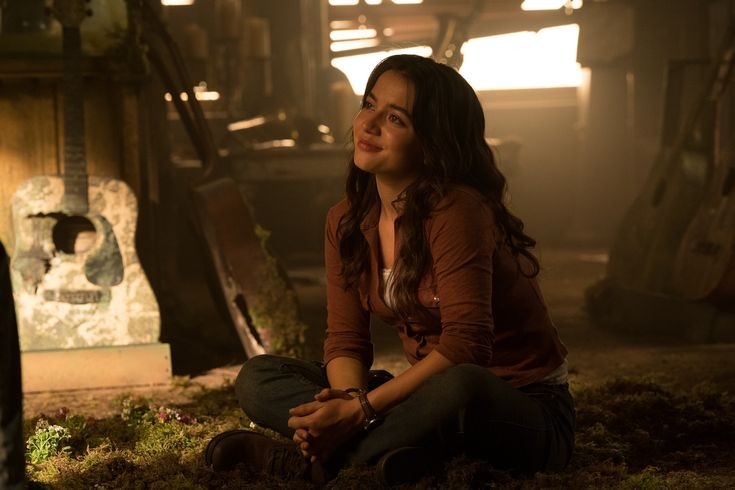
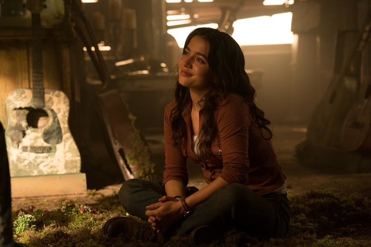

Dina
 

Dina, o afeto em tempos de escuridão
Espontânea, leal, corajosa e afetuosa, Dina é uma presença luminosa no mundo sombrio de The Last of Us Part II. Sua energia, seu humor e sua sensibilidade emocional a tornam não apenas um alívio diante da brutalidade do cenário, mas também uma âncora afetiva crucial para Ellie, ajudando a humanizar e equilibrar sua jornada marcada por dor e vingança.
Dina é apresentada como integrante da comunidade de Jackson, onde vive com seu irmão Jesse. Desde o início, sua conexão com Ellie é evidente — profunda, sincera e cheia de nuances. Ao longo da narrativa, ela se torna muito mais do que apenas uma companheira de viagem: é parceira, apoio emocional e contraponto à espiral destrutiva em que Ellie se vê mergulhada. Juntas, enfrentam uma jornada cheia de riscos e revelações, na qual o amor entre elas é constantemente colocado à prova.
Mesmo diante de situações de extrema tensão, Dina demonstra empatia, força e sabedoria. Quando confrontada com perdas, medo e a incerteza do futuro, ela escolhe a proteção da vida e daquilo que é possível construir, mesmo em meio aos escombros. Sua decisão de priorizar o filho que espera, por exemplo, revela sua capacidade de olhar além da vingança e enxergar um futuro possível, algo raro no mundo de The Last of Us.
Dina não empunha apenas armas, mas também afeto, ironia e sensibilidade, elementos que trazem humanidade a uma história marcada por violência. Sua presença é um lembrete constante de que, mesmo na devastação, o amor ainda pode ser um ato de resistência.
Uma personagem com alma
Dina é interpretada com delicadeza e carisma por Shannon Woodward, que empresta à personagem não apenas sua voz, mas também sua performance em captura de movimentos. A química entre Shannon e Ashley Johnson (Ellie) foi essencial para construir uma relação crível e emocionante, considerada por muitos fãs como um dos aspectos mais tocantes do segundo jogo.
Impacto e legado
Dina representa o amor como abrigo, como escolha e como cura. Sua existência traz equilíbrio ao enredo, sendo fundamental para mostrar que Ellie ainda pode ser amada, cuidada e reconstruída, mesmo diante de todas as perdas. Ela é uma figura de esperança silenciosa, que não precisa de grandes discursos para demonstrar sua força.
Embora não seja protagonista no sentido tradicional, Dina conquistou um lugar de destaque no coração dos jogadores. Sua relação com Ellie foi celebrada por sua representatividade, profundidade emocional e realismo. Na série adaptada pela HBO, a magnífica e aclamada Isabella Merced dá vida a essa heroína! Em um universo em ruínas, Dina é a prova de que conexões verdadeiras ainda são possíveis, e que, no fim, são elas que nos mantêm humanos.
MBTI: ENFP / ISFJ (Inspiradora / Protetora)
Idade: Cerca de 18 a 20 anos (Jogo 2)